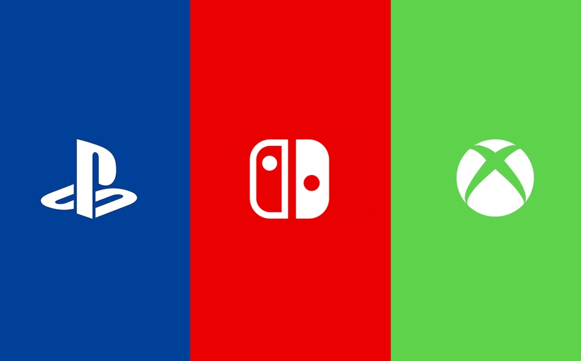

Las consolas mas usadadas del 2018
La guerra de consolas en la actualidad esta teniendo un impacto tremendo en los videojugadores, veremos quien lidera esta semana el rankin de las consolas mas jugadas hasta el momento:
| Consola | Semestres en el año | |||
|---|---|---|---|---|
| Junio | Diciembre | |||
| Resultados | Primer semestre | Segundo semestre | ||
| Jugadores activos | ||||
| PlayStation 4 | 45% | 42% | ||
| XBOX ONE | 35% | 31% | ||
| Nintendo Switch | 20% | 27% | ||